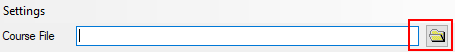
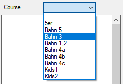

Any OCAD Course setting file can be used as Course file. Supported OCAD Version include OCAD 8 to OCAD 2018.
A course Setting file can by either defined by typing the file name or using browser

After a course setting file is selected, the courses defined in the file are ready for selection in the course dropdown list

When a course gets selected, OCourse starts to interpret the corresponding course definition of the OCAD Course.
For most cases, the sections correspond to the OCAD-interpretation.
The course is displayed in the section display and the section table.
(The section table is explained in the calculation model section)
In some special cases, OCourse extends the interpretation of OCAD. For example, if a butterfly section is defined in OCAD,
OCourse automatically finds the different variations and displays them. Each found variation is displayed with a letter combination in the sections table.
When you press the mouse button on one control and move the mouse while pressed
to another control in the sections display, the statistics are displayed for the corresponding selection
When you hover the mouse over a variation in the sections table, the controls of the variation are displayed as tool tip.
When you select a variation in the sections table, the controls are highlighted in the sections display.
For each leg in a relay course, the possible variations for the leg are displayed in the sections table.
Additionally, the mean lengths of the legs are displayed in the top of the sections table.
Hover and selecting a variation in the sections table have the same effects as described in part selection.
Whereas in OCAD, one-man relay is a special mode, OCourse interprets a simple OCAD-course with multiple passages at the start control as one-man relay.
Permutations are are different possibilities to complete a entire course so, that all sections defined by the course are passed.
That means, the full distance of the course is the same, but the order of the passed sections may differ.
OCourse calculates permutations for start numbers so, that the order of the sections between the different permutations differ as much as possible.
| 1 | Estimated number of permutations of the current course. |
| 2 | Current category. If no categories are defined for a course, it's the course name. When you change the categorie, Min. Nr and Max. Nr. changes as defined in OCAD. |
| 3 | Min. Nr is the minimum start number to calculate permutations for. Initial value is taken from OCAD. |
| 4 | Max. Nr is the maximumn start number to calculate permutations for. Initial value is taken from OCAD. |
| 5 | Calculate the permutations for the defined start numbers by Min.Nr and Max.Nr |
| 6 | Export the calculated permutations as simple courses to OCAD courses or text files. |
The calculated permutations are displayed in the permutation table.
| StartNr | The linked start number of the permutation. |
| Index | The index of the permutation in the list of the sortedly calculated permutations. |
| Part 1, Part 2, ... |
Per start control, a part is defined. Generally, this is a leg for relays / one man relay. If you select a part in the permutation table, the corresponding section is highlighted in the section table and the section display. |